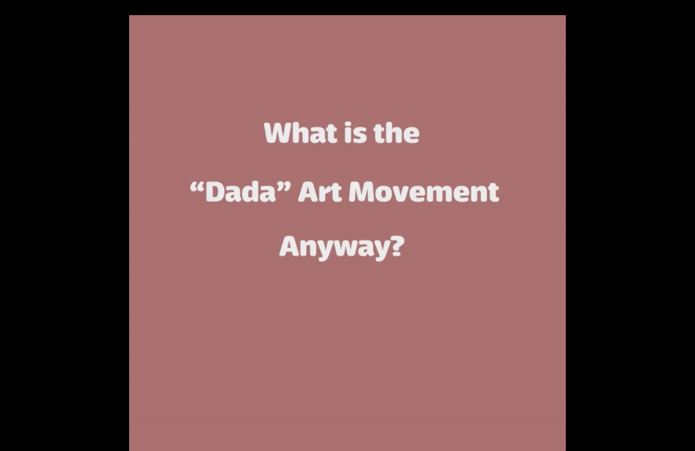
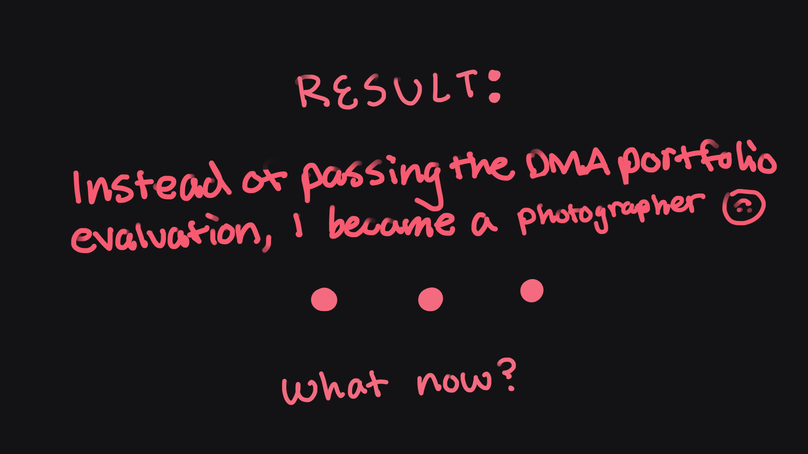

Instead of combining the videos and text into one singular page, I decided to separate each one to its own page and created this one for the screenshots and explainations.
I never enjoyed the process of animating or video editing in general, so doing this project was one of the most stressful projects I've done in a long time. As seen above, I was more confident in the main animation project than the primer.
The images in order → Dada primer intro → scenic bg → one part of the liquid animation transition → attempt in a "game over" downer ending that's similar to the "Atelier" JRPG games I've played.